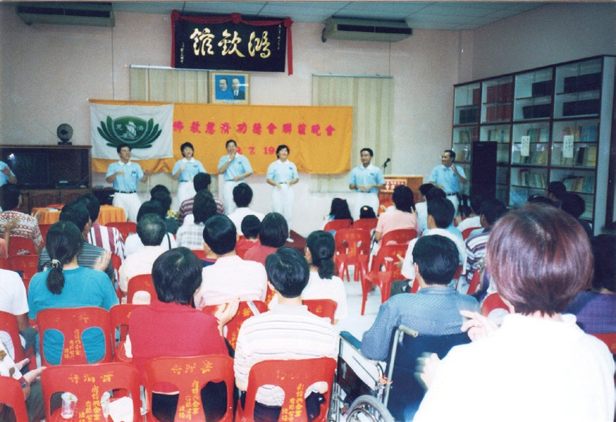
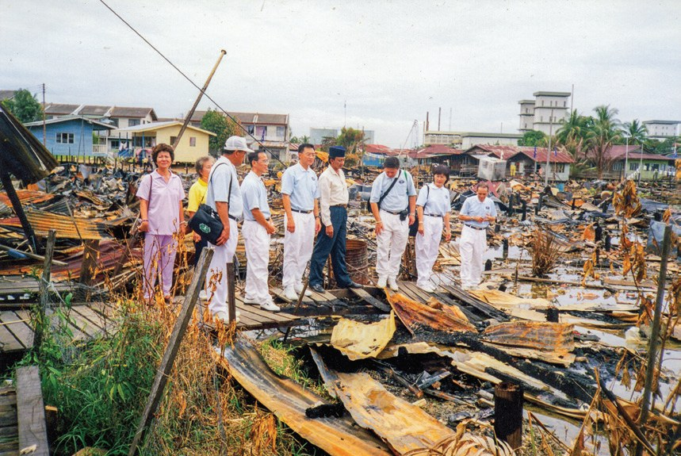
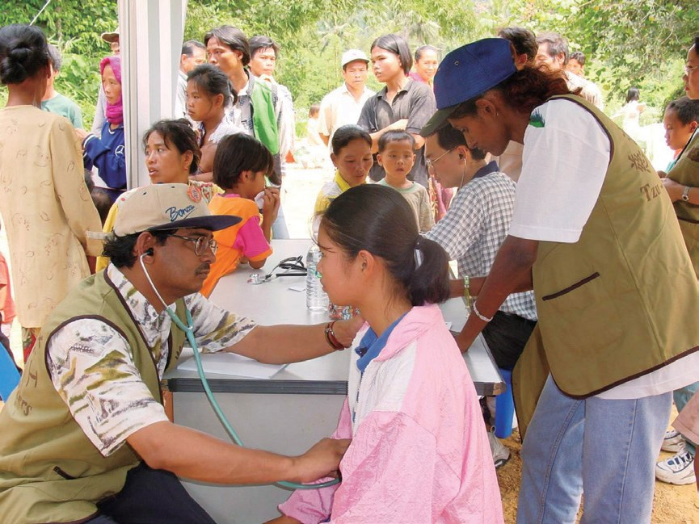
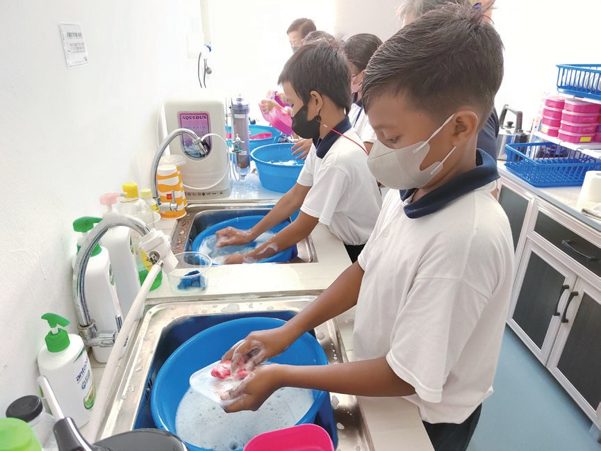
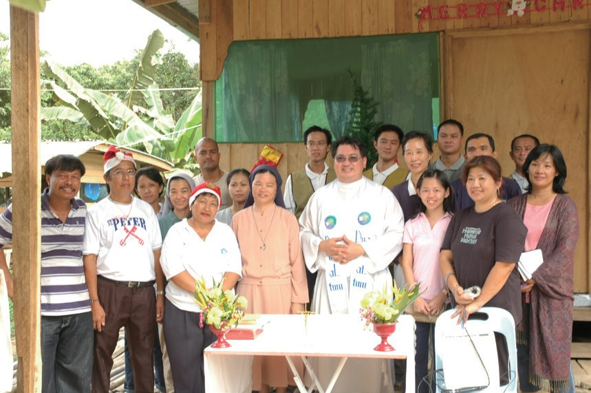
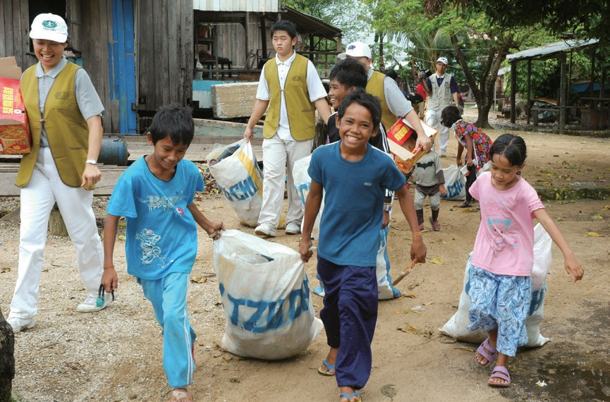
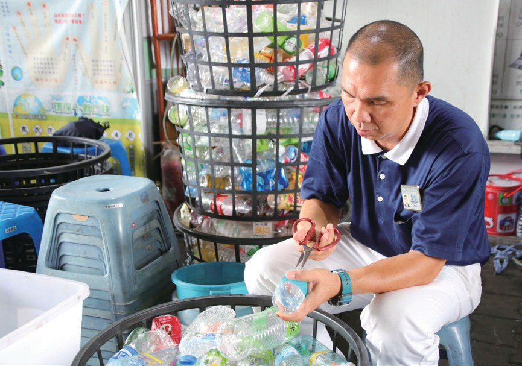
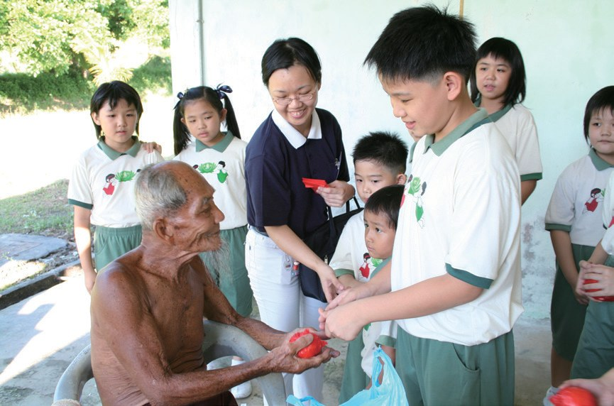
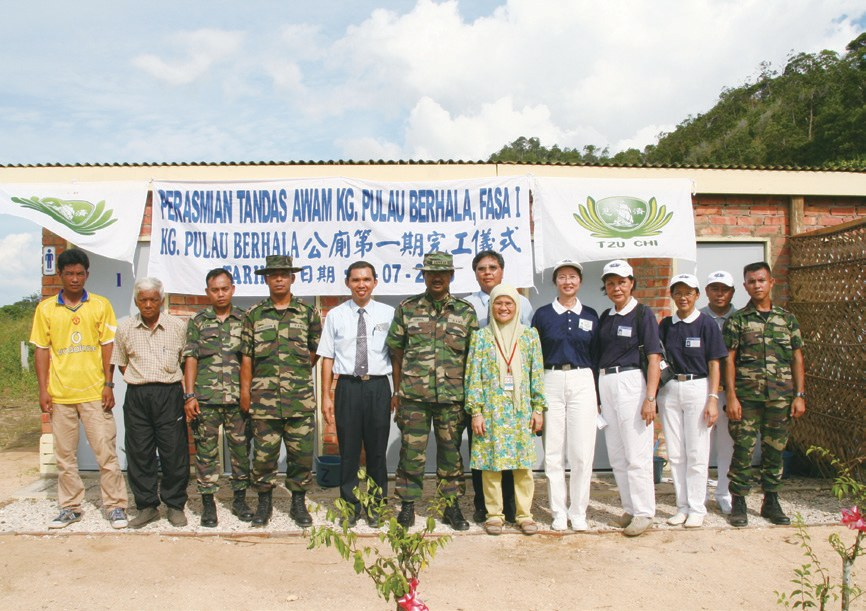
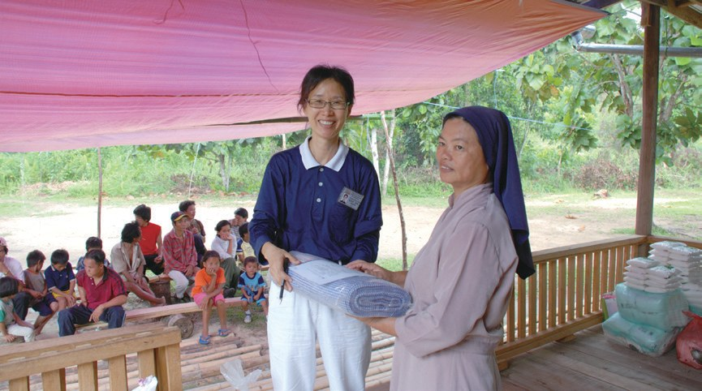

山打根聯絡處
坐車、搭飛機、再渡河，為了什麼？

先別急著下結論，讀完再說說你的想法～
這一篇講山打根聯絡處：1999年，一場大火之後，慈濟在沙巴東岸生根。
你會讀到要轉三趟車船才到得了的義診、海上高腳屋旁的學習中心，還有一座沒有學校、卻聽得到讀書聲的小島。
下面是原書的節錄，紅色底線是我們替你標出的轉折點。
讀之前：一個地方又遠又難去，你覺得還值得去幫忙嗎？
從火災開始
1999年，亞庇志工來到山打根。閱讀引導

2月28日，山打根甘榜加拉汶汀發生火災，燒毀44間木板屋，亞庇志工於3月1日前往關懷、發放，嘉惠113個家庭。當地民眾感動於慈濟的付出，也紛紛投入志工行列。

也變成了志工！
志工的援助，打動許多民眾的心，慈濟足跡自此在山打根展開。

- 24人慈誠委員p.726
- 52人志工p.726
- 逾三千五百多人會員p.726
再遠也要去
坐車、搭飛機、渡河。閱讀引導
2000年，山打根火災事故頻傳，為了能更快速地幫助災民，提供急難發放，在志工楊耀英的牽引下，山打根福利部與慈濟簽訂合作協議。
2001年9月15日，山打根慈濟在甘榜烏魯東貢首次舉辦義診及發放活動，嘉惠168位居民。

同時，因為義診的因緣，也接引了信仰天主教的醫生加入，為救拔貧苦病患，破除宗教與種族的隔閡。
猜一猜閱讀引導
地中海貧血患者要長期輸血，費用很重。醫院請慈濟幫忙，慈濟決定每月補助多少？
「……距離有多遠？要從馬六甲開兩個鐘頭的車到吉隆坡，接著從吉隆坡再搭三個鐘頭的飛機到山打根，還要開兩個鐘頭的車程，才能到達山打根要義診的地方。……」
上人開示・p.729
再開車，還要渡河！
「這麼難行的道路，為什麼慈濟人不放棄？因為當地苦，苦難蒼生最能吸引菩薩的愛心，……」
上人又說・p.729黑區變亮區
高腳木屋旁的失學孩子。閱讀引導
山打根甘榜利達，居住著許多無國籍人士，建在海上的違章高腳木屋，遇到海水漲潮時，村民出入都要涉水而過。

志工們開始找地點、找老師、找學生，更重要的是營運的款項，志工們自己捐，也向鄰居、朋友募款
還要錢……
「我也曾想放棄。教育部的官員認為我們不收費，營運的資金從哪裡來？怎麼經營？我們和官員分享，慈濟所做的點點滴滴，以及在斗湖學習中心的運作，最終順利通過申請。」
山打根負責人龔德益坦言・p.7312022年5月，山打根學習中心開課。在找尋老師的過程中，幸好有一位退休的陳秋虹校長願意加入教育團隊，帶領一群二十幾歲有愛心、有理想的年輕教師。

還回來當校長！
「……黑區已經變成了亮區，這些地方真的很有福，慈濟人有因緣給他們的亮光，相信一代會比一代更好，……」
上人感恩地說・p.732樹下的讀書聲
往海裡丟的垃圾，和沒有學校的島。閱讀引導
大部分村民為非法移民，未曾受過教育，衛生、環保意識薄弱；沒用的東西，他們都會把它往海裡丟，導致環境髒亂、蚊蟲滋生。
「除了自己在家做環保，還可以存竹筒幫助貧窮者；我也邀約鄰居一起響應環保。」
環保志工娜蓬歡喜地表示・p.734
還邀鄰居一起！
志工發現百淡附近因為山林過度開發，導致河水嚴重污染，居民缺乏乾淨的水源。於是慈濟決定在百淡河兩岸之間的鄉村挖掘兩口水井，解決居民的用水問題。

志工在每月前往巴哈拉島時，都會帶動當地的大人小孩一起加入環境清潔的行列，讓整座島回歸乾淨的風光。
會接受佛教團體嗎？
當地居民雖然多為穆斯林，志工也把握機會推廣慈濟人文，如翻譯靜思語、慈濟歌曲與手語等。因為慈濟尊重他們，用真誠的愛與他們互動，不因宗教而有所阻隔，得到很好的迴響。

「……雖然那裡沒有學校，但是我們也可以在樹下教育，琅琅的讀書聲，真的讓人非常地感動。」
上人感恩慈濟人的付出・p.737「非常感謝慈濟送給我的物資，我從未領取過這樣的東西，真不知如何表達內心的感激，願上蒼賜福給所有的慈濟人。」
疫情中領到物資的孫丹居民西娜玲說・p.738修行的好地方
一位留下來的臺灣媽媽，一位帶著員工做慈濟的老闆。閱讀引導
1999年4月，謝秀華應慈濟志工劉蓮嬌邀約，出席「慈濟大體捐贈」講座，會中深受慈濟無私奉獻的精神感動，立刻加入成為會員，投入志工服務。
就投入志工服務！
2007年，謝秀華的丈夫回臺灣經商，孩子也出國求學，但她仍決定留在山打根做慈濟。
「山打根還有很大的福田需要耕耘，這裡是修行精進的好地方。」
謝秀華認為・p.739她還是留下來。

「我是基督教徒，我參與慈濟很開心很快樂，因為可以幫助很多人。我們都有一個共同的目標，沒有膚色、宗教的分別，什麼人都幫。」
龔德益的員工培迪杜說・p.740停一停：誰讓你記住了？閱讀引導
選一位你印象最深的人。沒有標準答案。
有人家人都走了還留下，有人曾想放棄卻撐下去，有退休校長回來教書，有村民存竹筒幫人。哪一位讓你最有感覺？

一起回頭看看吧～
回望
依本章原文整理，每一條都標了原書頁碼。閱讀引導
背後原因
為什麼辦學習中心

小川營運那麼難，為什麼還要在山打根辦學習中心？

希望在教育上人說人間的希望在教育。p.730–731
- 失學的孩子
甘榜利達住著許多無國籍人士。p.731
- 學習中心開課
2022年5月山打根學習中心開課。p.731
後續發展
山打根一路走來

小禾從第一場茶會到學習中心開課，經過了多少年？
- 1997.7.19
慈濟首次在山打根辦茶會。p.725
- 1999.4.18
山打根聯絡點成立。p.725
- 2001.9.15
首次在偏鄉義診及發放。p.727
- 2006.7.17
巴哈拉島環保公廁啟用。p.736

- 2019.3
龔德益承接負責人。p.740
- 2022.5
山打根學習中心開課。p.731
沒有宗教的分別
大家一起來
小禾在山打根，哪些不同信仰的人一起做好事？

第一圈天主教義診接引了信仰天主教的醫生。p.728
- 第二圈穆斯林
巴哈拉島居民一起清潔環境。p.737
- 第三圈基督教
員工說什麼人都幫。p.740
以上只整理本章寫到的事；書裡沒寫到的，我們不替它下結論。
回頭看讀前的選擇閱讀引導
上人說慈濟人要坐車、搭飛機、渡河才到得了義診地點（p.729）；因為當地苦，苦難蒼生最能吸引菩薩的愛心（p.729）。路越難走，越見得到那分愛。
以後會不會有一間真的學校？
只有你自己看得到喔！

準備好了就一起出發～